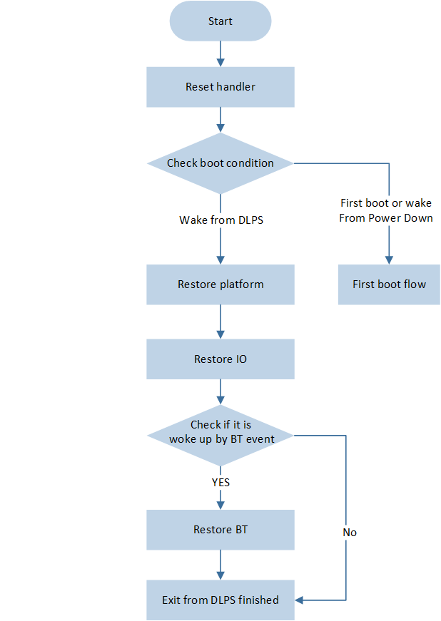

Low Power Mode
Under the low power mode, the system will place unused devices in a low power state. In this state, the devices consume less power and can quickly wake up and restore all functions when needed. Most components (such as Clock, CPU, Peripherals, and RAM) can be powered down to reduce system power consumption.
This document contains the following chapters: Power Mode Brief Introduction, Power Management, Application of Low Power Mode, Exception Analysis, and DLPS Mode APIs.
Power Mode Brief Introduction
This chapter will introduce in two parts: Platform Low Power Mode and Bluetooth MAC Low Power Mode. The platform module will put components like the CPU, peripherals, and RAM into different power-saving states based on the current power mode. The Bluetooth MAC module controls the operating modes of the Bluetooth and relies on the platform module to function properly.
Platform Low Power Mode
The platform module supports the following three power modes.
- Active -- Active Mode.In the Power active mode, if the program does not enter the idle task, the CPU is in an active state, and the CPU clock is in a high-speed state, with a default of 40M Clock. If the program enters the idle task, the CPU enters the sleep state, and at this time, the CPU clock will automatically slow down. The CPU clock during sleep will reduce to 625KHz.
- DLPS -- System Sleep Mode.Lower power consumption and relatively fast entry and exit time, while maintaining RAM content.
- Power Down -- Ultimate low power mode.In this mode, RAM contents are not retained, and exiting from Power Down mode involves a restart process, which takes longer than the DLPS mode. Only LPC and PAD (disable debounce) can wake up from Power Down.
Usage of Each Module under Different Power Modes is as follows, and this document will introduce the DLPS mode in detail.
Mode |
PAD |
RAM |
32K clock |
RTC |
Peripheral |
CPU |
CPU Clock |
|---|---|---|---|---|---|---|---|
Active |
√ |
√ |
√ |
√ |
√ |
√ |
√ |
DLPS |
√ |
√ |
√ |
√ |
× |
× |
-- |
Power Down |
√ |
× |
× |
× |
× |
× |
-- |
Features and Limitations
The system can quickly enter and exit the DLPS mode.
The time to enter DLPS is less than 1ms.
Bluetooth wake-up event: the time to exit DLPS is approximately 4ms.
Platform wake-up event: the time to exit DLPS is approximately 3ms.
Powering off the CPU will lead to a disconnection of the SWD, hence when using JLink for online debugging, DLPS mode needs to be disabled.
Only when the Bluetooth MAC is under the DSM, the platform can be allowed to enter DLPS or Power Down mode.
Bluetooth MAC Low Power Mode
The Bluetooth MAC module supports the following two power modes.
- Active Mode -- Bluetooth MAC Active.In the Bluetooth MAC Active mode, the Bluetooth MAC can operate normally, and the relevant registers can be accessed normally.
- DSM -- Bluetooth MAC Sleep.In Bluetooth MAC Sleep mode, the Bluetooth MAC is in low power mode, and the associated memory cannot be accessed.
Features and Limitations
Only when the platform module is in Active mode, the Bluetooth MAC module is allowed to enter and exit DSM.
Power Management
In most cases, the system is idle, and only essential data needs to be retained for system recovery. The clock, CPU, peripherals, and RAM can be powered off to reduce system power consumption. When any event needs to be processed, the system will exit low power mode. The clock, CPU, Bluetooth, peripherals, and RAM will be powered on again and restored to the state before entering DLPS, then respond to wake-up events. Different power management units exist at different system levels, each implementing check/store/enter/exit/restore functions. This section provides a detailed introduction to power management.
Entering Low Power Mode
This section introduces the process and conditions for entering low power mode.
Low Power Mode Entry Process
The flow for entering low power modes, as shown in Low Power Mode Entry Process , is as follows:

Low Power Mode Entry Process
The system enters the idle task, and disables the interruption.
If the Bluetooth module is already in DSM, proceed directly to 4. Otherwise, check whether the Bluetooth module allows entry into DSM.
If the Bluetooth module allows entry into DSM, save the Bluetooth module state and enter DSM mode. Otherwise, enable interruption and return to idle task.
Check whether the platform module allows entry into low power mode.
If the platform module allows entry into low power mode, save the platform module state and enter low power mode. Otherwise, enable interruption and return to idle task.
Conditions for System to Enter Low Power Mode
Power management monitors the states of different modules to select the appropriate power mode so as to ensure that the system continues operating properly.
Conditions for System to Enter DLPS Mode
Only when the following conditions are met simultaneously, the system will enter DLPS mode.
The system executes in idle task, all other tasks are in block state or suspend state, and no interruption occurs.
The Bluetooth MAC module allows entry into DSM.
Non-Link mode (when there is no connection, BT exists in the following three states)
State
Description
Standby State
The system will not send or receive data, Bluetooth will enter DSM, and will not wake from DSM.
Advertising State
(connectable or non-connectable)
If Adv_Interval * 0.625ms >= 15ms, allow entry into DSM, otherwise do not allow entry.
If Advertising Type is Direct Advertising (High duty cycle), do not allow entry into DSM.
For multiple broadcasts, conditions Adv_Interval * 0.625ms >= 15ms must still be met to enter DSM.
Scanning State
If (Scan Interval-Scan Window) * 0.625ms >= 15ms, allow entry into DSM, otherwise do not allow entry.
Link mode (with the following two roles)
Role
Description
Master Role
If Connection Interval * 1.25ms >= 15ms, allow entry into DSM.
Slave Role
If Connection Interval * ( 1 + Slave Latency ) * 1.25ms >= 15ms, allow entry into DSM.
Note
Under the condition of simultaneous broadcasting and connection of the device, only when the time interval from the current time to the next broadcasting or connection event is greater than or equal to 15ms, is it allowed to enter DSM.
Platform Module
After the execution of the check callback registered by Peripheral and APP, all check functions return PASS.
The period of the SW timer or the time of task delay is greater than or equal to 20ms.
Note
If the Bluetooth module is allowed to enter DSM, but the platform module is not allowed to enter DLPS, then the Bluetooth module enters DSM, while the platform module remains in an active state.
If the Bluetooth module is not allowed to enter DSM, then the whole system will remain in an active state.
Conditions for System to Enter Power Down Mode
The above conditions for entering DLPS have all been met.
There are no SW Timers or task delay in an active state.
Exiting Low Power Mode
This section introduces the process and conditions for exiting the low power mode.
Low Power Mode Exit Process
The flow for exiting low power modes, as shown in Low Power Mode Exit Process , is as follows:

Low Power Mode Exit Process
- Reset HandlerAfter the system exits DLPS mode, a Reset exception will be triggered to enter the Reset Handler. In the Reset Handler, the cause of the restart will be checked. If the system is powered on or woke up from Power down mode, it will follow the reboot process. If it wakes from DLPS mode, it will follow the DLPS recovery process.
- Complete Platform Exit from DLPSAfter the system wakes from DLPS mode, the CPU will restore power and high-speed clock. Flash and RAM will also begin to power up. The final stage of Platform recovery is completed in the timer task, at which point the Platform completely exits DLPS, completing the restoration of CPU NVIC, peripherals, and the execution of user-defined exit callback functions.
- Check BT Module UnitsDetermine whether a Bluetooth event has woken up the system. If so, the Bluetooth module exits DSM and restores its state; otherwise, the Bluetooth module continues to maintain a low power state.
Conditions for Exiting from Low Power Mode
After the occurrence of the following wake-up events, the system will exit from low power mode. It is necessary to ensure that related events are successfully configured before entering low power mode.
Mode |
|||||
|---|---|---|---|---|---|
DLPS |
√ |
√ |
√ |
√ |
√ |
Power Down |
√ |
√ |
× |
× |
× |
Application of Low Power Mode
Power management is a modular and extensible framework. Users can register callback functions at stages such as checking, storing, entering, exiting, and recovering, to facilitate unified management during application startup. Users only need to select the desired low power mode and perform corresponding configurations based on the application scenarios they wish to use.
Low Power Mode Selection
The user can set and get low power modes through the following functions, as follows:
Low power mode of platform module:
power_mode_set()andpower_mode_get()Low power mode of Bluetooth module:
bt_power_mode_set()andbt_power_mode_get()
Example: Configure the Bluetooth module as DSM, and configure the platform module as DLPS.
void pwr_mgr_init(void)
{
bt_power_mode_set(BTPOWER_DEEP_SLEEP);
power_mode_set(POWER_DLPS_MODE);
}
Register Callback Function
Regarding Bluetooth MAC DSM, the registration and handling of callback functions are present in ROM. Users can only register callback functions to the platform module. Each APP project will have a separate board.h file, where users can customize the specific modules for platform preservation and recovery. The detail is as follows:
Users can use
power_check_cb_register()to register callback functions to the power management check stage, determining whether to allow the platform module to enter low power mode.Users can use
DLPS_IORegUserDlpsEnterCb()andDLPS_IORegUserDlpsExitCb()to register functions into the user callback functions for entering and exiting stages.It is necessary to configure
USE_USER_DEFINE_DLPS_EXIT_CBandUSE_USER_DEFINE_DLPS_ENTER_CBto 1 inboard.h./* if use user define DLPS enter/DLPS exit callback function */ #define USE_USER_DEFINE_DLPS_EXIT_CB 1 #define USE_USER_DEFINE_DLPS_ENTER_CB 1
IO Store and Restore Function:
If a certain peripheral is used in the APP and it requires the system to automatically save and restore its state when entering and exiting DLPS, then the corresponding
USE_XXX_DLPSmacro for that peripheral needs to be set to '1' inboard.h. For some peripherals, such as GDMA, it is necessary to re-invoke the init function in the DLPS exit callback function./* if use any peripherals below, #define it 1 */ #define USE_ADC_DLPS 0 #define USE_GPIOA_DLPS 0 #define USE_I2C0_DLPS 0 #define USE_I2C1_DLPS 0 #define USE_IR_DLPS 0 #define USE_KEYSCAN_DLPS 0 #define USE_SPI0_DLPS 0 #define USE_SPI1_DLPS 0 #define USE_UART0_DLPS 0 #define USE_UART1_DLPS 0 #define USE_ENHTIM_DLPS 0
The system will use
power_stage_cb_register()to uniformly register the IO Store function and the user-enter callback function into the power management enter stage, and will also uniformly register the IO Restore function and the user-exit callback function into the power management exit stage.This step is automatically executed by the system in
DLPS_IORegister(), without the need for manual registration by the user.DLPS enter stage: execute NVIC, PINMUX, user-enter, and peripherals storation sequentially.
DLPS exit stage: execute PINMUX, peripherals, user-exit, and NVIC restoration sequentially.
void DLPS_IO_EnterDlpsCb(void) { // NVIC Store CPU_DLPS_Enter(); // PINMUX Store Pinmux_DLPS_Enter(); #if USE_USER_DEFINE_DLPS_ENTER_CB if (User_IO_EnterDlpsCB) { User_IO_EnterDlpsCB(); } #endif #if USE_ADC_DLPS ADC_DLPSEnter(ADC, (void *)&ADC_StoreReg); #endif // Other IO module } void DLPS_IO_ExitDlpsCb(void) { // PINMUX Restore Pinmux_DLPS_Exit(); #if USE_ADC_DLPS ADC_DLPSExit(ADC, (void *)&ADC_StoreReg); #endif // Other IO module #if USE_USER_DEFINE_DLPS_EXIT_CB if (User_IO_ExitDlpsCB) { User_IO_ExitDlpsCB(); } #endif // NVIC Restore CPU_DLPS_Exit(); } void DLPS_IORegister(void) { power_stage_cb_register(DLPS_IO_EnterDlpsCb, POWER_STAGE_STORE); power_stage_cb_register(DLPS_IO_ExitDlpsCb, POWER_STAGE_RESTORE); return; }
Example: Configure the Bluetooth module as DSM, and configure the platform module as DLPS.
POWER_CheckResult DLPS_Check(void) { return POWER_CHECK_PASS; } void EnterDlpsSet(void) { } void ExitDlpsInit(void) { } void pwr_mgr_init(void) { power_check_cb_register(DLPS_Check); DLPS_IORegUserDlpsEnterCb(EnterDlpsSet); DLPS_IORegUserDlpsExitCb(ExitDlpsInit); DLPS_IORegister(); bt_power_mode_set(BTPOWER_DEEP_SLEEP); power_mode_set(POWER_DLPS_MODE); }
Wake-up Event Configuration
PAD Wake-up Event
Pinmux will be power-off in DLPS mode, so it is necessary to config PAD from pinmux mode to AON mode before entering DLPS. Before entering DLPS, first the PAD needs to be configured to prevent leakage, then the wake-up pin for DLPS needs to be configured to ensure it can wake up the system.
PAD (AON) Configuration
PAD will not lose power in DLPS mode, so it is not necessary to save its state. However, to prevent leakage, the following settings need to be made to PAD when entering DLPS.
PADs which are not used by the system, must be set to: SW mode, Power on mode, Pull Down, Input mode
These are the default settings for PADs, so the user does not need to make any changes.
The PAD used by the system depends on the circuit voltage.
If the voltage is VDD, PAD need to be set to: SW mode, Power on mode, Pull Up, Input mode
If the voltage is GND, PAD need to be set to: SW mode, Power on mode, Pull Down, Input mode
If the voltage is between VDD and GND, the PAD should be set to: SW mode, Shut down mode, Pull None, Input mode
The PAD with wake-up function needs to be set to: SW mode, Power on mode, Pull Up/Pull Down, Input mode
PAD cannot be configured to Shut down mode and Output mode. Whether to pull up or pull down is determined by the external circuit.
When exiting DLPS, ensure that the PAD is restored to its original state to guarantee that the PAD can perform the functions required by the application, thereby avoiding any issues.
Wake-up Pin Configuration
The PAD has a DLPS wake-up function, which can call
System_WakeUpPinEnable()to enable the wake-up function with a certain pin. When the level of this pin matches the wake-up level, it will wake the system from the DLPS state.To wake up the system when P3_2 is at a high level, and not enable debounce, configure as follows:
System_WakeUpPinEnable(P3_2, PAD_WAKEUP_POL_HIGH, PAD_WAKEUP_DEB_DISABLE);
To wake up the system when P3_2 is at a high level, and enable debounce of 8ms, configure as follows:
System_WakeUpDebounceTime(P3_2, 8); System_WakeUpPinEnable(P3_2, PAD_WAKEUP_POL_HIGH, PAD_WAKEUP_DEB_ENABLE);
System irq is a system interruption, triggered by
System_WakeUpPinEnable()enabling PAD wake-up, and when the current pin level matches the wake-up level. By default, the system irq is turned off after entering DLPS, and restored after exiting DLPS. Therefore, if PAD wakes up DLPS, the system will enter the system irq handler after the system irq is restored.When debounce wake-up is disabled, the system irq will be triggered after the system wakes up from DLPS. The user can call
System_WakeUpInterruptValue()in the system irq handler to check which pin woke up the system. After that,Pad_ClearWakeupINTPendingBit()should be called to clear the wake-up status of the pin.When debounce wake-up is enabled, the system irq will be triggered after the system wakes up from DLPS. However, the user cannot determine which pin woke up the DLPS and can only call
System_WakeupDebounceStatus()in the System irq handler to get the debounce wake-up status, and then callSystem_WakeupDebounceClear()to clear the debounce wake-up status. After enabling debounce wake-up, only when the pin remains in the wake-up level state for a time longer than the debounce time will DLPS be awakened, preventing accidental wake-ups. However, the drawback is that after enabling debounce wake-up, it is impossible to detect which pin specifically wakes up DLPS.
LPC Wake-up Event
Demo project:
sdk\samples\lowpower\dlps\proj\rtl87x2g\mdkProject configuration: Set
CONFIG_LPC_DLPS_ENto 1.LPC wake-up requires calling the following APIs to enable.
LPC_WKCmd(ENABLE);
RTC Wake-up Event
HW Wake-up
Demo project:
sdk\samples\lowpower\dlps\proj\rtl87x2g\mdkProject configuration: Set
CONFIG_RTC_DLPS_ENto 1.HW Wake-up requires additional calls to the following interfaces:
RTC_WKConfig(RTC_COMP_WK_INDEX, ENABLE) // enable Comparator wake up RTC_SystemWakeupConfig(ENABLE);
SW Wake-up
In RTC HW wake-up DLPS case, after the RTC expires, the system exits DLPS, performs the post-power-on restore action, and finally triggers the RTC IRQ. This causes the time generated by the RTC IRQ to be delayed, and the delayed time is the time it takes to exit DLPS.
If a higher precision RTC interrupt is needed, SW wake-up DLPS can be used. After exiting DLPS, the RTC will execute the interrupt on schedule. Since SW wakes up DLPS, it considers the delay in exiting DLPS and wakes up DLPS in advance, making the RTC interrupt more accurate.
The specific method is as follows.
Cancel the RTC wake-up enable interface to turn off the RTC HW wake-up.
In the callback, add the
next_wake_up_timepointer parameter to calculate the next wake-up time (unit: 32.15us), and update the calculated value tonext_wake_up_time, which will trigger the next wake-up by the platform.uint32_t RTC_tick; // unit: 32.15us POWER_CheckResult RTC_Check_GT(uint32_t *next_wake_up_time) //unit 31.25us { uint32_t wake_up_count = RTC_GetCompValue(RTC_COMP_INDEX) - RTC_GetCounter(); if(wake_up_count > 0) { *next_wake_up_time = wake_up_count * RTC_tick; return POWER_CHECK_PASS; } else { return POWER_CHECK_FAIL; } }
Register the DLPS check callback.
RTC_tick = (RTC_PRESCALER_VALUE + 1); power_check_cb_register(RTC_Check_GT);
OS Event Wake-up Event
SW Timer wake-up, the interval until the next due time needs to be no less than 20ms.
Task delay wake-up, the interval until the next task execution needs to be no less than 20ms.
BT Event Wake-up Event
BT is in advertising state, and the advertising anchor has arrived.
BT is in connection state, and the connection anchor has arrived.
BT is in scanning state, and the scanning anchor has arrived.
Application Example
PAD Wake-up without Debounce
Register DLPS check, enter and exit vendor callback functions, pull down P3_2 to wake up DLPS.
POWER_CheckResult DLPS_Check(void) { return POWER_CHECK_PASS; } void EnterDlpsSet(void) //DLPS Enter { Pad_Config(P3_2, PAD_SW_MODE, PAD_IS_PWRON, PAD_PULL_UP, PAD_OUT_DISABLE, PAD_OUT_LOW); System_WakeUpPinEnable(P3_2, PAD_WAKEUP_POL_LOW, PAD_WAKEUP_DEB_DISABLE); } void ExitDlpsInit(void) //DLPS Exit { Pad_Config(P3_2, PAD_PINMUX_MODE, PAD_IS_PWRON, PAD_PULL_UP, PAD_OUT_DISABLE, PAD_OUT_LOW); } void pwr_mgr_init(void) { #if DLPS_EN power_check_cb_register (DLPS_Check); DLPS_IORegUserDlpsEnterCb(EnterDlpsSet); //DLPS Enter CB DLPS_IORegUserDlpsExitCb(ExitDlpsInit); //DLPS Exit CB DLPS_IORegister(); bt_power_mode_set(BTPOWER_DEEP_SLEEP); power_mode_set(POWER_DLPS_MODE); #endif }
Define a system interrupt handler to detect which pin wakes up DLPS.
void System_Handler(void) { APP_PRINT_INFO0("System_Handler"); NVIC_DisableIRQ(System_IRQn); if (System_WakeUpInterruptValue(P3_2) == SET) { APP_PRINT_INFO0("P3_2 Wake up"); Pad_ClearWakeupINTPendingBit(P3_2); System_WakeUpPinDisable(P3_2); } NVIC_ClearPendingIRQ(System_IRQn); }
PAD Wake-up with Debounce
Register DLPS check, enter and exit vendor callback functions, pull down P3_2 to wake up DLPS, set 8ms debounce.
POWER_CheckResult DLPS_Check(void) { return POWER_CHECK_PASS; } void EnterDlpsSet(void) { Pad_Config(P3_2, PAD_SW_MODE, PAD_IS_PWRON, PAD_PULL_UP, PAD_OUT_DISABLE, PAD_OUT_LOW); System_WakeUpPinDisable(P3_2); System_WakeUpDebounceTime(P3_2, 8); System_WakeUpPinEnable(P3_2, PAD_WAKEUP_POL_LOW, PAD_WAKEUP_DEB_ENABLE); } void ExitDlpsInit(void) { Pad_Config(P3_2, PAD_PINMUX_MODE, PAD_IS_PWRON, PAD_PULL_UP, PAD_OUT_DISABLE, PAD_OUT_LOW); } void pwr_mgr_init(void) { #if DLPS_EN power_check_cb_register(DLPS_Check); DLPS_IORegUserDlpsEnterCb(EnterDlpsSet); DLPS_IORegUserDlpsExitCb(ExitDlpsInit); DLPS_IORegister(); bt_power_mode_set(BTPOWER_DEEP_SLEEP); power_mode_set(POWER_DLPS_MODE); #endif }
When debounce wake-up enables DLPS, the System interrupt handler cannot determine which pin woke up the DLPS, only whether a debounce wake-up DLPS exists. Therefore, it only needs to clear the debounce status.
void System_Handler(void) { APP_PRINT_INFO0("System_Handler"); NVIC_DisableIRQ(System_IRQn); if(System_WakeupDebounceStatus(P3_2) == SET) { System_WakeupDebounceClear(P3_2); DBG_DIRECT("debounce Wake up"); } NVIC_ClearPendingIRQ(System_IRQn); }
Exception Analysis
The power management will log intermediate state information regarding entry and exit of low power modes, in order to facilitate subsequent analysis. The following provides corresponding anomaly analysis means for potential issues that may occur in practical applications.
Unable to Enter DLPS
User can read the platform module's error code through
power_get_error_code()to determine the reason for enter failing,PowerModeErrorCode.User can read the refuse reason through
power_get_refuse_reason(), which is the callback address blocking the system from entering DLPS.
Example: Create a SW Timer (which needs to be excluded from the wake-up SW Timer list, ensuring it will not wake up DLPS) and read the platform module's error code and refuse reason inside the timeout callback function.
void *xTestTimerHandle = NULL;
void test_timer_cb(void *xTimer)
{
APP_PRINT_INFO2("Platform fail to enter DLPS, error 0x%x, reason 0x%x",
power_get_error_code(), power_get_refuse_reason() );
os_timer_start(&xTestTimerHandle);
}
void sw_timer_init(void)
{
APP_PRINT_INFO0("sw_timer_init");
bool retval = false;
retval = os_timer_create(&xTestTimerHandle, "Test Timer", 1, 1000, false, test_timer_cb);
if (!retval)
{
APP_PRINT_INFO1("create xTimerPeriodWakeupDlps retval=%d", retval);
}
else
{
os_timer_start(&xTestTimerHandle);
APP_PRINT_INFO0("Start one-shot Test Timer: Period 1s");
}
power_register_excluded_handle(&xTestTimerHandle, PM_EXCLUDED_TIMER);
}
Unable to Exit DLPS
Check if there are excessively long delay operations or OS operations within the DLPS Enter callback. Upon entering the DLPS Enter callback, the system has already turned off interrupts and scheduling, and operations at this time may affect the DLPS wake-up sequence.
Abnormal DLPS Exit
Users can read the platform module's wake-up reason through power_get_wakeup_reason(), PowerModeWakeupReason.
Example: Read the wake-up reason inside the DLPS Exit callback.
POWER_CheckResult DLPS_Check(void)
{
return POWER_CHECK_PASS;
}
void EnterDlpsSet(void)
{
}
void ExitDlpsInit(void)
{
APP_PRINT_INFO1("Platform wake reason 0x%x", power_get_wakeup_reason() );
}
void pwr_mgr_init(void)
{
#if DLPS_EN
power_check_cb_register(DLPS_Check);
DLPS_IORegUserDlpsEnterCb(EnterDlpsSet);
DLPS_IORegUserDlpsExitCb(ExitDlpsInit);
DLPS_IORegister();
bt_power_mode_set(BTPOWER_DEEP_SLEEP);
power_mode_set(POWER_DLPS_MODE);
#endif
}